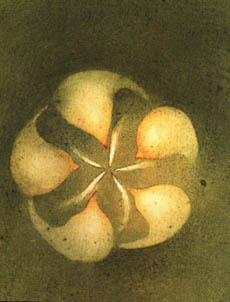

Spoleènost toho mu¾e pøiná¹ela klid. Na druhý den jsem ho po¾ádal, aby mi dovolil u nìho celý den odpoèívat. Pokládal to za samozøejmé. Pøesnìji øeèeno mìl jsem dojem, ¾e ho nic nemù¾e ru¹it. Ten odpoèinek nebyl pro mne nijak nezbytný, ale byl jsem plný zvìdavosti a chtìl jsem se toho dozvìdìt víc. Pastýø vypustil stádo a zavedl je na pastvu. Ne¾ ode¹el, namoèil do vody ve vìdru pytlík s peèlivì vybranými a odpoèítanými ¾aludy.
V¹iml jsem si, ¾e místo hole nesl ¾eleznou tyè, asi pùldruhého metru dlouhou. Pøedstíral jsem, ¾e se procházím, abych si odpoèal,

a ¹el jsem rovnobì¾nì s jeho cestou. Pastva ovcí byla dole v ú¾labinì. Malé stádo pastýø pøenechal dohledu psa a ¹el vzhùru k místu, kde jsem stál. Obával jsem se, ¾e mi pøichází vytknout, ¾e jsem vtíravý. Ale vùbec ne. Vedla tudy jeho cesta a vyzval mì, abych ho doprovodil, pokud nemám nic lep¹ího na práci. Vystoupil je¹tì dvì stì metrù na kopec.Kdy¾ pøi¹el na místo, které si pøedem vybral, zarazil ¾eleznou tyè do zemì.
Udìlal tak v¾dycky dolík, vlo¾il do nìj ¾alud
a potom zahrnul dùlek hlínou. Sázel duby. Zeptal jsem se ho, jestli mu ten pozemek
patøí. Øekl, ¾e ne. Ptal jsem se, zda ví, komu patøí. Ale nevìdìl.
Pøedpokládal, ¾e je to obecní pozemek nebo ¾e mo¾ná patøí lidem, kteøí o nìj
nestojí. Nestaral se o to, aby poznal majitele. Peèlivì vysázel svých sto ¾aludù.
Po obìdì zaèal zase tøídit ¾aludy. Asi jsem se tázal dost
naléhavì, proto¾e mi odpovìdìl. U¾ tøi roky sázel stromy v téhle samotì.
Vysázel jich sto tisíc. Dvacet tisíc se jich ujalo. Poèítal s tím, ¾e
z tìch dvaceti tisíc jich je¹tì polovinu ztratí. Postarají se o to hlodavci
nebo se stane nìco, co v zámìrech Prozøetelnosti není mo¾né pøedvídat.
Zbývalo tedy deset tisíc dubù a ty porostou na místì, kde døív nebylo vùbec nic.
V tu chvíli mì napadlo, kolik je tomu mu¾i asi let. Zøejmì mu
bylo pøes padesát. Pìtapadesát, øekl mi. Jmenoval se Elzéard Bouffier. Mìl kdysi
v rovinì statek. Tam pro¾il svùj ¾ivot.
Ztratil jediného syna a potom i ¾enu. Uchýlil se do samoty, kde ho
tì¹ilo ¾ít v klidu, s ovcemi a se psem. Usoudil, ¾e kraj hyne, ponìvad¾
je tam málo stromù. A proto¾e nemá nìjakou dùle¾itou práci, rozhodl se dodal
je¹tì, ¾e tu situaci napraví.
A ponìvad¾ i já, aèkoliv jsem byl mladý, jsem v té dobì ¾il osamìle, dovedl jsem osamìlé lidi chápat a navázat s nimi spojení. Pøesto jsem v¹ak udìlal chybu. Právì mé mládí mì vedlo k tomu, abych si podle sebe pøedstavoval budoucnost i jakési hledání ¹tìstí. Øekl jsem mu, ¾e za tøicet let tìch deset tisíc stromù, to bude krása. Odpovìdìl velice prostì, ¾e kdyby mu Bùh dopøál ¾ít je¹tì tøicet let, vysázel by spoustu dal¹ích dubù a tìch deset tisíc stromù by byla jen kapka v moøi.
V dal¹ím roce vypukla první svìtová válka a pìt let jsem byl na vojnì. Voják u pìchoty mù¾e jen stì¾í myslet na stromy.